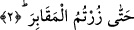

ile tefsir etmektir. Çünkü eğlendirmek meşgul etmeyi gerektirir. Ancak daha sonra çok
kullanıldığı için bu lâzimî mânâ, “meşgul etti, oyaladı” anlamında örfî hakîkat hâline
gelir.
Dikkat edilirse âyette insanın nelerden alıkonduğu ifâde edilmemiştir. Bunlar, dînî
hususlarda insanı ilgilendiren şeylerdir. Bunların açıkça zikredilmemesi, ne kadar
mühim ve çok olduklarını hissettirmek içindir. Bir şey hazfedilir, açıkça ifâde
edilmezse, nekrede olduğu gibi o şeyin şânını büyültmeye yol açar. Çünkü ikisinde de
kapalılık vardır. Diğer taraftan insanın alıkonduğu şeyler açıkça ifâde edilmeyince
zihin, ihtimâl dâhilinde olan her şeye gider. Meselâ, çoklukla övünmek sizi Allah’ı
zikirden, ilim, tefekkür ve ibret alma gibi kalbî, muhtelif ibâdet çeşitleri gibi bedenî
vâcip ve menduplardan alıkoydu.
“Tekâsür” kelimesinin “el” takısı ile mârife yapılması, ahd içindir. Ancak burada
sözkonusu olan ahd-i mezmûmdur. Yâni kötü şeylerde olan ve bilinen çokluk yarışı… O
da mal, mevkı, yardımcılar ve akrabalar gibi dünyevî ve fânî şeylerin çokluğuyla
övünmektir. Buna mukâbil bâkî olan uhrevî şeylerle övünmek güzeldir. Tahdîs-i nîmet
kabîlinden olduğu takdirde ilim, amel, ahlâk, sıhhat, kuvvet, zenginlik, güzellik, ses
güzelliği ile övünmek gibi. Hz. Abbâs’ın sikâye vazîfesi kendisinde olduğu için
övünmesi; Şeybe’nin, Kâbe’nin anahtarını elinde tutması sebebiyle övünmesi gibi
şeyler bu tür övünmeye girer. Nitekim Hz. Ali’nin şu sözü de aynı kabîldendir: “Ben
kılıcımla küfrün hortumunu kestim; küfür kendisine müsle yapılmış/uzuvları kesilmiş bir
hayvan hâline geldi.”
“Tekâsür”, iki kişinin mal ve sayıca birbirine karşı övünmesi, birbirlerine, Kur’ân’ın
ifâdesiyle, “Ben servetçe senden daha zenginim, insan sayısı bakımından da senden
daha güçlüyüm” (Kehf, 18/34) demeleridir. Burada kasıt ise sayı çokluğuyla
övünmektir. Çünkü rivâyete göre, Abd-i Menaf oğulları ile Sehm oğulları İslâm
devrinde efendileri ve eşrâflarının çokluğuyla övünürler. Her biri diğerine: “Biz hem
efendilik, hem de fert bakımından sizden daha fazlayız” dedi. Saydıklarında Abd Menaf
oğullarının sayısının daha fazla olduğu ortaya çıktı. Bunun üzerine Sehm oğulları:
“Câhiliye dönemindeki zulümler bizi yok etti. Bizi dirilerimiz ve ölülerimizle birlikte
sayınız.” dediler.
Kâşifî demiştir ki: Mezarlığa gittiler ve “şu falan kimsenin, şu filan kimsenin
kabridir” diye kendi kabilelerine âid kimselerin mezarlarını saydılar. Sehmoğulları,
Abd-i Menâfoğullarından üç kişi fazla çıktı. Bu sebeple diğerlerine karşı üstünlük
gösterisine girdiler ve kendileriyle gururlandılar.
Âyetin mânâsı şöyledir: Dirilerinizin çokluğuyla övündünüz, sonra